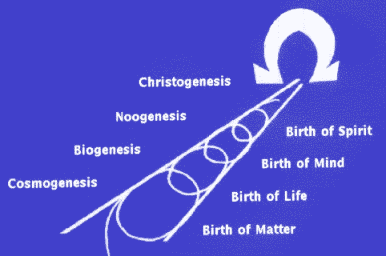
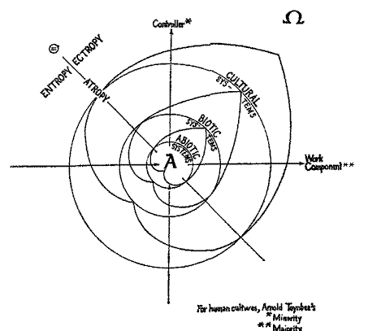
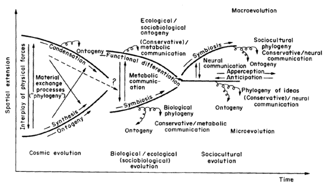
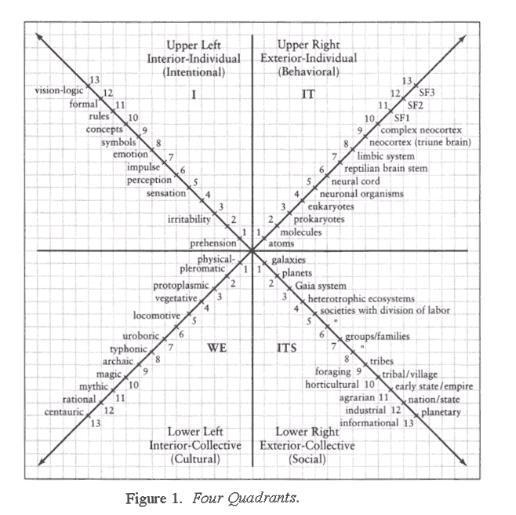
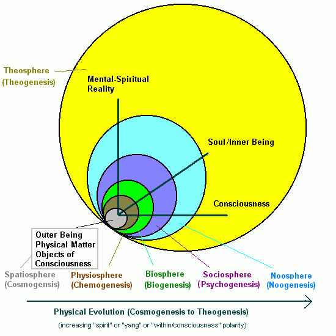
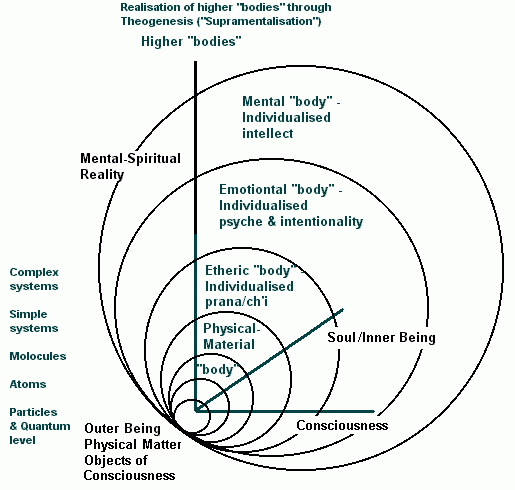
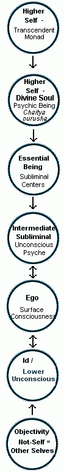
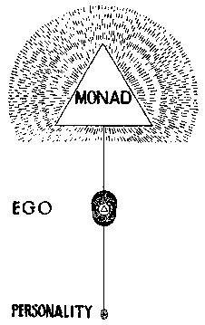
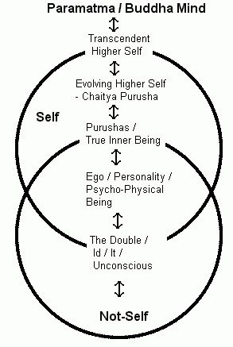
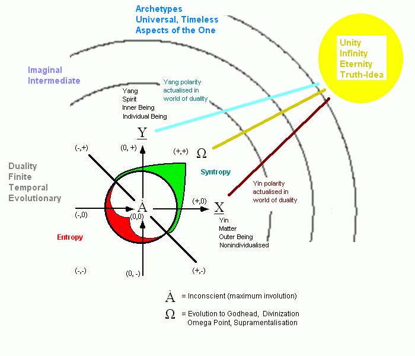

A New Integral Paradigm - Cosmology, Involution, and Evolution
Evolution - the whole picture
Current accounts of evolution, both scentific and esoteric, tend to be limited and one-sided. Either they only describe the physical side of things, with the higher faculties (life, mind, etc) explained in a holistic way and in terms of emergent evolution, and the occult elements ignored (the evolutionary cosmology of Teilhard, the systems theory synthesis of Jantsch, and the integralist position of Gebser and Wilber), or they describe things only from a psychic perspective (e.g. Theosophy and Anthroposophy, with their detailed accounts of rounds and root races) but get the science completely wrong (19th century concepts of Lemuria and Atlantis don't fit with modern archeology, biogeography, and plate tectonic theories (although the Theosophists argue that Lemuria = Gondwana)).
In fact both sides are right, but each side fails to incorporate the other, and so each remains partial.
The only way to understand the whole picture is through a truely integralist perspective that doesnt run away from occultism and metaphysics on the one hand, and the findings of science on the other. This means a paradigm that both sides are likely to reject as being too way out or diverging too much from their own preferred worldview. And this is what I have attempted to do here.
Evolution and Physical Reality
A number of esoteric and spiritual teachings assert that it is necessary to come down to the physical plane and take on a human incarnation or some physical form to achieve enlightenment or liberation, For instance Buddhism refers to the "precious Human Rebirth"; the idea that even the gods would hav eto incarnate in physical form to progress was held by Blavatsky and apparently Theon as well, andSai Baba also mentions something like this in one of his talks. Sri Aurobindo makes the intriging suggestion that evolution is only possible in a physical existence, because the other realms and beings are "typal" and hence unchanging.
If these ideas are correct, it suggests why physical reality exists. It is only in the outer physical being that the original Consciousness is solid enough to enable the interaction and synergy of dynamic systems. More, if we assume the merit of Sri Aurobindo's concept of Supramentalisation: it is only in this physical mode that existence is dense and stable enough to form the foundation for structures that can be perfected; that is, that can be the vehicle of, and take on the consciousness of, the Noetic Absolute ("supermind").
Evolutionary Stages - Six Singularities

The idea of goal-directed evolution (teleology) goes all the way back to Aristotle, who taught that God (Theos) is the examplar or final cause (teleos) to which the whole Cosmois is moving.
This idea was taken up again by Jesuit priest and paleontologist Pierre Teilhard de Chardin, who developed a theory of spiritual evolution, according to which evolution is a process of ever-increasing "interiorisation", complexity, and psychicisation or spiritualisation of a single squence from basic (atomic or subatomic) matter to humanity and beyond. At every stage the same basic processes apply, which lead to the evolution is both an upward and forward movement through space and time, leading to the arising of larger and more complex forms, from cosmogenesis (Matter) through biogenesis (Life) to noogenesis (Mind). According to Teilhard, humanity's evolutionary path is converging towards the "Omega Point" of Christogenesis, leading to the Consummation or Christing of creation. (Teilhard de Chardin, 1959)
Teilhard's ideas have been very influential, and contrinuted to subsequent teleological or spiritual theories of evolution, such as those of Oliver Reiser (Cosmic Humanism), and Edward Haskell (Universal Science). At the same time as Teilhard was developing his cosmology, Sri Aurobindo was working on his Integral Yoga and doctrine of Supermind, and there are a number of similar elements in both teachings.
|

Haskell 1972 p. xxx
|
A more complex representation of these same three levels is provided by Erich Jantsch:

Despite the different format, both diagrams are saying pretty much the same thing, although each emphasises and different details.
It seems that three "kingdoms" (or singularity jumps) seems to be a common schema (Sri Aurobindo refers to Matter, Life and Mind, the same triad), both Arthur M Young, and the Unified Science team,also refer to sub-atomic particles, atoms and molocules as separate "kingdoms" so to speak. Ultimately there's any number of ways to divide things up, according to how you rank the singularities (e.g. sub-atomic particles, atoms and molocules can all be included under "matter"). Werner Schwemmler for example destinguishes between Cosmogensis (matter - physics: sub-atomic particles and atoms) and Chemogenesis (molocules), and in addition has Biogenesis (Life) and Sociogenesis (Mind or Culture, represented by Man) (Schwemmler 1989). And as we have seen Ken Wilber presents a universal classification ("AQAL") in terms of evolution expressed in terms of four quadrants (interior and exterior, individual and collective) rather than a single sequence (Wilber 2000, 2000a, 2000b, etc). These stages are shown below:

Here instead of the detailed dynamics of three or four major singularity stages, there is a sequence representing a larger number of finer stages, in the above diagram numbered 1 to 13. The early stages in the right half of the diagram is based on Erich Jantsch's stages, whilst the the left half corresponds to Wilber's own theory of personal psychological development and collective cultural evolution. Another representation of this diagram are the series of tables at the back of Wilber's book Integral Psychology.
The following table compares the different viewpoints.
| Teilhard de Chardin | Sri Aurobindo | Unified Science | Erich Jantsch | Werner Schwemmler | Ken Wilber | Current thesis |
| Omega Point | Supermind | -- | -- | -- | higher stages | Theogenesis |
| Noosphere | Mind | Human kingdom | sociocultural evolution | Sociogenesis | 9 to 13 | Noogenesis |
| Biosphere | Life | Animals | Biogenesis | 5 to 8 | Psychogensis (Metazoa etc) | |
| Plants (incl. prokaryotes) | Biosphere / ecological / sociobiological evolution |
3 to 4 | Biogenesis (Prokaryotes, etc) | |||
| Atmosphere Hydrosphere Lithosphere etc... Molocules Atoms Particles |
Matter | Geoids | Cosmic Evolution | Chemogenesis | 2 | Chemogenesis (chemical evolution, dynamic systems) |
| Molocules | ||||||
| Atoms | Cosmogenesis | 1 | Cosmogenesis (matter) |
|||
| Particles | ||||||
| Photon |
Reviewing the evolution of the cosmos, it seems that the early stages follow each other through a mechanical process of self-emergence (i.e. given the laws of the universe and the expanding cosmos), the early stages like the Lepton Era, the Hadron Era etc follow each other mechanically, and are almost totally of the nature of "exteriors" and hence amenable to scientific method with little or no distrortion. But the later stages, the formation of primitive life, and then more advanced life, which involve increasing complexity and organisation, require and imply more "interior" or "within" as Teilhard would say. And it is here where objectivist science completely breaks down, because it can only study life by dehumanising it, by the very opposite of empathy, as shown with the laboratory animal, trapped and experimented upon with little or no consideration for its welfare.
So even though the early stages represent singularity breaks and leaps of physical organisation, they constiutute a more negligable progression or gradation as regards the spiritual facet, whereas the latter stages such as Biogenesis and Psychogenesis do not differ as much externally as the difference between atoms and molocules say, there is more difference consciousness wise, in the within or noetic pole of things. One could also postulate a future stage of Theogenesis or Divinisation (corresponding to Teilhard's Omega Point), in which there is an even greater degree of development of the Interiors.
The six evolutionary singularities, and primary evolutionary phases, postulated here can be listed as follows:

Cosmogenesis,
the birth or coming into being of the physical universe - what Ken Wilber calls
the Physiosphere, and Mark
Edwards seems to refer to as the "Spatiosphere", see  Through
AQAL Eyes) - via the Big Bang and supermembranes or whatever was the factor
that preceeded it )hence we can posit an earlier stage of Physiogenesis,
which is the result of emanation).
There is only one "Spatiosphere" or "Physiosphere" in and as our universe, and
it pertains to the maximum involution of consciousness, and the lower levels of
what Sri Aurobindo calls the Inconscient (French
for "Unconscious")
Through
AQAL Eyes) - via the Big Bang and supermembranes or whatever was the factor
that preceeded it )hence we can posit an earlier stage of Physiogenesis,
which is the result of emanation).
There is only one "Spatiosphere" or "Physiosphere" in and as our universe, and
it pertains to the maximum involution of consciousness, and the lower levels of
what Sri Aurobindo calls the Inconscient (French
for "Unconscious")
Chemogenesis, the birth or coming into being of dynamic systems, enabling chemical evolution and the development of nebula, planets and the evolution of inanimate matter which nevertheless constitutes basic physical and chemical levels of organisation. These stages have been ably categorised by scientific universalists like Erich Jantsch and Werner Schwemmler. While matter is not conscious in terms of sentience, at the Inner levels it is experienced as the involved and hidden consciousness of matter, the "earth mind", which pertains to the Inconscient.
Biogenesis, the birth or coming into being of organic life, through the descent and incarnation of etheric principles and non-physical life-forms. I would suggest examples of this can be found in the "First Root Race" described by Blavatsky and equivalent concepts presented by Trevor James Constable. This enables completely new levels of organisation, expressed on Earth with the origin of life during the Archean or even the late Hadean era. No doubt similar evolutionary developments have occured on other worlds as well; in fact prokaryote organisms may well be ubiquitous. Biogenesis pertains to the cellular level of consciousness, the "water mind" or what Wilber calls the "Uroboric" stage.
Psychogenesis, the birth or coming into being of feeling, psyche and inward life, and the descent and incarnation of astral and astral-etheric principles. Examples of this might be found in concepts oflemurian and atlantean root races described by Steiner, and similar ideas (uroboric, magical thinking etc) in the evolutionary philosophy of Ken Wilber (more on parallels between Wilber and Steiner here). Empathy indicates that animals have a fully developed psychic faculty, as advanced or more advanced than that of man. On Earth I would associate psychogenesis with the development of the nervous system, this puts it at the time of the Cambrian explosion and the origin of metazoa. Again, Psychogensis would have occured on all worlds in the universe where complex life is found, although this is not likely to have been anywhere as common as biogensis. If it was there would be a lot of planets where intelligent technological beings evolved, and hence the Earth would have been colonised by aliens long ago. This is what is known as the Fermi Paradox. Psychogenesis pertains to the overall somatic and conscious intentional-behavioural level of consciousness, and its shadow "the double"
Noogenesis (a useful word coined by Teilhard), the birth or coming into being of higher cognitive thought, mental or intellectual understanding, the descent into physical embodiment of mind, associated here on Earth with the "head consciousness" and the brain. Th result has been mental organsiation of matter, in other words, civilization and the newtwork of knowlefdge (the noosphere). If this has occured elsewhere (which it probably has), it has not happened often, because otherwise at least one race out of all those thousands or millions would have develped interstellar space craft (or even self-replicating nano-pribes) Fermi Paradox again.
Theogenesis, the birth or coming into being of the Divine reality, the transformation and divinisation of the lower creation by the noetic Absolute. This is the consumamtion of evolution as currentkly understood (but not the end of evolutionas such). It will give rise to new divine levels of organisation in matter, the Life Divine in Sri Aurobindo's turn of phrase, and the spiritualisation (but not the dissolving) of Earth. This is somethng that has been variously described by different phsilosophies, religions, and teachings.
Individual and collective evolution
Emergent evolutionist and Wilberian integralist cosmologies describe the process of evolution on a collective or planetary (and even cosmic) level, but ignore the role of the individual. This is because, obviously, evolution requires millions or billions of years, whereas a single human lifetime is only 70 or 80 years, and that of an insect or a worm a lot less. And for the cosmos to attain godhood is not much comfort if you have long ago become dust. However, Theosophical, Anthroposophical, and other occult cosmologies, and Indian-based teachings such as those of Sri Aurobindo and Meher Baba, present a far grander view of the individual, who evolves through progressive transmigration or rebirth through sucessive lifetimes. And in an oft-quoted poem, the great Sufi Rumi seems to talk about this sort of evolution, when he says
I died as a mineral and became a plant,
I died as plant and rose to animal,
I died as animal and I was Man....
Yet once more I shall die as Man,
to soar With angels blest;
but even from angelhood I must pass on:
all except God doth perish.
Of course, it is not clear if he is talking literally or, more likely, figuratively, because Sufism does not admit a belief in reincarnation.
And not all occult theories of reincarnation and evolution are tenable. Rudolph Steiner taught a sort of clockwork absurdity in which every person reincarnates once every 1,240 (or however many) years, alternating as male and female with each incarnation, and evolving exact time to the evolution of the Earth and the Solar System. Steiner does not speak of any evolution beyond the "Saturn sphere", and says that in 14 thousand years the present Earth will have completely spiritualised (and similarily 14,000 years ago the Earth did not exist). This sort of creationist perception show that esotericism alone cannot be provide a history of the physical universe.
A more flexible and integral perspectie can acknowledge both planetary and cosmic evolution of nature on the one hand, and individual spiritual evolution. This might be shown as follows:
| Universe | Cosmic Universal evolution, Big Bang formative events, large-scale structures (galactic superclusters etc), entropy and omega, cosmic divinization | several or many cosmic cycles of emanation and withdrawl (kalpas) | |
| Cosmic | Galactic, Interstellar, and stellar evolution, heavy element formation (nuclear synthesis), nebula and star formation and decay, posthuman/post-singularitan "swarming", cosmic divinization | Coming into and passing out of embodiment of cosmic occult entities | |
| Environmental | Protoplanetary, chemical, geological, biological, ecological, and planetological evolution, progressive development and phylogeny atmosphere, hydrosphere, biosphere, sociosphere, technosphere, noosphere, and theosphere, posthuman singularity, an "swarming", cosmic divinization | ||
| Individual | Individual psycho-physical development / ontogeny | Rebirth and spiritual growth and development to perfection through successive psychophysical rebirths | |
| Part or Cell or Subsystem | Individual physical or psycho-physical development / ontogeny | Coming into and passing out of existence |
It may be argued that a concept like reincarnation is "unscientific:" or "eastern". But in fact it simply is something that is treated sceptically in the West because it is not part of the exoteric materialistic-Judeo-Christiuan canon. If moreover one accepts a concept like an immortal evolving divine indidividual consciousness, the concept of successive rebirth naturally follows.
Although both Theosophy and Ken Wilber's Holonomic cosmology assert that "everything evolves", and so don't discriminate between a rock or galaxy and an insect or a person, this is a minority view in terms of the perennial philosophy. I have decided to follow the Aurobindonian position which has the spiritual evolution of physical beings as central in evolutionary terms. The gods may be far vaster and more powerful, but they don't evolve in the same way as physical entities do.
Evolution of the Subtle Body:
If we adopt this teleological perspective of physical evolution, it suggests that evolution involves progressive individualisations of "octaves" of the gross and subtle physical reality. In terms of occult planes and resonances, the Dense Physical plane or octave is "psychicised" and "spiritualised" by a number of resonances representing the embodiment of higher realities within the physical. In Theosophy and the New Age, these are called the Etheric, Emotional, and Mental bodies. These are the densest of the "subtle bodies", and constitute progressive developments of emergement evolution, as an expression of the increasing degree of "within" or interiorisation that is associated with each evolutionary stage. And while it would be wrong to state things dogmatically, we could speak in terms of generalities or symbolic associations. So chemogenesis means the first activity of the etheric, biogenesis means etheric individualisation and the first activity in the physical of the emotional / psyche / sentience (the embodied astral - scaled down from Greater Astral Reality to Astral Physical to Emotional Body), psychogenesis means emotional/psychic individualisation and the first activity in the mental physical (or mental body, which is likewise scaled down from the State or universe of Pure Mind). And noogenesis means both the full individualisation of the mental body (hence man the "thinking being") and the first activity in the spiritual mental levels, which only appear in a few visionary thinkers, philosophers, and sages, while most of the masses are caught in a mentalised emotionalism / emotionalised intellect. However, if Sri Aurobindo is to believed, then the gradual evolution from mental to higher mental to illumined mental and so on is to be bypassed by the supramental process (or Theogenesis)

Each individualisation is also accompanied by / generates / is caused by a collective etheric, emotional, mental, and supramental transformation, itself initiated by the activity of occult and higher spiritual hierarchies
In addition to the lower subtle bodies there are higher and more occult ones pertaining to the Astral Physical, Spiritual Physical, Greater Astral, and Greater Ideational-Mental. These don't necessarily follow the evolutionary sequence of the Dense Physical; indeed the further from the oputer physical reality one goes, the less that physical laws - and equivalent current holistic-integralistic ones based on them - make sense, and new understanding is required (for example one can learn about the Astral Reality through a study of Hermetic Kabbalah).
This why any attempt at a total knowledge, an integral knowledge that embraces everything, that remains shackled to modernist or postmodernist anti-metaphysical prejudices, will always be partial attempts. To explore and understand Reality in its fullness it is necessary to incorporate metaphysical, esoteric, and occult teachings and systems of knowledge and practice.
Occult factors in Evolution
We have seen that Theosophical and Anthroposophical cosmologies present evolution in terms of the progressive individuation of successive metaphysical principles by a reincarnating monad. This is really just the temporalisation of the standard Graeco-Medieval "Great Chain of Being". So minerals have a physical body only, plants both a physical and an etheric, animals add an astral body, and humanity a mental body (Theosophy) or Ego/Soul (Anthroposophy).
While this insight is probably basically correct, it is far too simplistic as presented above as literalist esotericism. A better hypothesis would be a two-way interaction in which emergent evolution results in the individuation of etheric, emoptional, and mental resonances in the physical, and that these resonances in turn shape emergent evolution, but that it is not a simplistic one on correspondence in that the mental faculty only appears in human evolution. In fact rudimentary mental bodies would seem to have appeared along with primitive invertebrates, as higher invertebrates like cephalopods, and higher vertebrates, both have sophisticated mental bodies. And the principle that drives this evolution is both the inner striving of the divine soul/monad/higher self, and the dynamic environment shaped by larger physical and occult cosmecological (astrognostic) forces and beings.
Earlier it has been suggested that involution involves the convergence of four distinct but interrelated ontoclines. The same could be said for evolution.
We begin with the understanding - suggested by Steven Guth several years ago - that the Earth, rather than being an isolated bubble in the empty void of space, is an open system which is constantly receiving forces or "beings" from elsewhere in the cosmos, and these influence the evolution of life, consciousness, and civilisation here. Early thoughts on this hypothesis are in these essays (Considering Islam and Cosmogenic evolution)
Now this hypothesis can be extended.
Evolution works on a number of levels, influenced by a number of factors, the boundaries between which may not always be clear or distinct. What we experience and what science understands as physical processes, physical evolution, human history, and so on, is only the most visible focal point of a much vaster gestalt, and that influences from the cosmos and from higher dimensions of consciousness ray in constantly. And conversely, that the Earth itself - at its present stage of evolution - serves as a beacon, radiating out in turn, and attracting more influences.
Moreover, evolution is not constant, but proceeds through a series of sudden leaps or saltations, through which a completely new form of existence emerges. Following Vernor Vinge, I use the term "Singularity" to describe this event. An alternative term would be "novelty", these are points at which there is a radical new development on Earth. Terence McKenna used the I Ching (or at least one interpretation thereof) to formulate a "timewave" [ref The Invisible Landscape], on which can be he mapped various events in history and the evolution of the Earth [link]. Unfortunately, McKenna insists on ending his 60 billion year timewave in 2012 (to fit it with the Mayan Calender), and this arbitrary date (once again the ahrimanic belief in "God" and apocalypse and what not) wrecks any objective validity such a system may have.
Now let us tie the above two insights together. Each time a new force or impetus rays into the earth, the result is a singularity, and the larger the force or impetus, the greater the Singularity or Novelty
But what is the nature of that new force or impetus? Here we have to consider the occult and esoteric dimensions and ontoclines. One might suggest a number of different "cosmic" factors that act upon the evolution of the planet. These hidden or occult ("occult" means hidden, invisible to the external senses) forces and factors and beings and personalities act upon the external (i.e. what is visible to the sense and to scientific instruments) physical reality, and determine astrophysical, planetological, Darwinian (natural selection, and variation through seemingly random genetic mutations - the response of life on the most physical level to its environment), and historical processes.
And all this is not to deny the physical mechanism of evolution known to science, and explained in every textbook on this subject. But Darwinian and sociohistorical processes are like the tip of the iceberg, that part of biological and social evolution we can see and observe and measure and study physically. Beneath or behind the surface there are many other forces and factors at work, shaping and determining things behind the scenes, and what science and history calls "chance" or "random" only appears to be. Carl Jung touches on this with his concept of Synchronicity, but the I Ching explains it much better. This, it is suggested, works through the expression of consciousness on a quantum level, causing both tiny and, occasionally, large singularities or burst of novelty, leading to the unfolding and development of consciousness and a greater range of potential expression for embodied existence and life.
The Formative/Morphogenetic - Immediately beyond, behind, and within the objective physical are the matrix or blueprints of the external. Rupert Sheldrake decsribed this best as the process offormative causation. It is not the mundane physical but pertains to the etheric (subtle physical) body and to environmental and perhaps even to larger cosmic etheric forces (But not universal because it changes through time), and to the inner rather than the outer being. And related to this there are samskaras or impressions from the past, from past lives and so on, as well as whatever else is carried over from individual past lives or from the collective evolution of the planet from its earlier stages. In the table of occult planes and resonances, the Morphogenetic derives from the Spiritual Physical.
The Ecodevic - In addition to - and further removed from the material physical than - the above are a whole host of forces: subtle physical, etheric, and physico-astral elementals, astral-mental (or orecto-ideational) group minds, devas (sensu New Age definition) of various kinds. We can call them ecodevas and in fact the nature hierarchies as a whole. They seem to correspond to theenvironmental intermediate (between inner and outer) or inner level of being of the Subtle Physical (Astral Physical and Spiritual Physical) and Physical Astral. More on them here
The Astrodevic - Then there are beings - here termed astrodevas to distinguish them from the terrestrial or ecodevas - that come in from elsewhere in the physical universe. One might think of the Earth at its present stage in evolution with such vibrant activity of biological life forms and human thought as radiating out into the cosmos and attracting these things. More on one such being here. These forces seem to correspond to the same strata as the Ecodevic, but on the cosmic level of being.
The Interdimensional - Then there are also beings, like the above, but which come from other physical or etheric universes than our own.
The Supraphysical - Then there is the descent of spiritual or occult forces from totally supraphysical dimensions of being - from the Astral or possibly even the Ideational universe. But because we might assume that the higher the universe the harder to express, so most of these phenomena are from the Astral Plane. This is also the kingdom of beings that often come through genuine (as opposed tophysical astral) channelled communications. These astral forces might sometimes be seen to be tied with the astrodevic forces from space, at other times they are purely universal. These forces and principles and gods and daimons may come from any of the supraphysical planes or universes, and the nature of the descent and what the new hierarchy or kingdom or revelation or divine or non-divine or anti-divine manifestation brings varies accordingly.
The Divine - And finally there are specific avataric descents from the highest levels, from the Divine or the Supreme Consciousness and the infinite higher possibilities of the Noetic Absolute. According to Sri Aurobindo (don't have the actual ref on me) every major evolutionary ascension of consciousness involves a divine descent. And Teilhard de Chardin [ref] refers to evolution moving or drawn towards a consummate point or goal, the omega point.
All these influences, each of which is not single but itself includes whole "kingdoms" or "hierarchies" of "beings" or forces, are not distinct in their influences, but often overlap.
Evolution of the Individuality
Behind the various subtle bodies is The Soul, the indwelling Divine principle, the Higher Self, the spiritual Soul or "psychic Being" which evolves to perfecton through successive rebirths (Aurobindo Life Divine p.xxx, and Theosophy ref) and provides the inner spiritual motivation or orientation for the outer personality, especially when it is sufficiently developed. In developing an empathetic cosmology, one shouldn't just think that only humans have a soul, but rather acknowledge that all sentient beings, or even, as animism asserts, all things, have a soul. The Soul corresponds to the Innermost Purushiclevel of being. But things are not so simple.
Earlier the trinity of Self, Non-Self, and the Overlap between the two was described as the Self-not-self sequence. Eastern philosophies like Samkhya and Advaita Vedanta refer to the buddhi(Samkhya) or "witness" (Advaita) as the reflection of Pure Consciousness or Self (purusha, atman) upon non-conscious nature (prakriti). In the same way, there is a polarity between the Higher Self and the Double) No dubt there are further transitional levels of self as well. The following sequence of hypostases follows in part Sri Aurobindo in distinguishing between a prakritic being, an inner being, and a transcendent higher self; Assagioli (left), as well as Freudian psychology. The diagram on the left, and the following list, shows the sequence sugggested here:


- Paramatman / Buddha Mind - This has already been described
- Transcendent Higher Self - This is the "Celestial" Higher Self, the "Man of Light", Heavenly Twin, the Angelic Spirit, the Guide of Light, etc in Hermetic, Sufi, Gnostic, and other such traditions, Ar-Ruh al-Qudsi/Supreme Spirit, Christ in Christian mysticism and esoteric Christianity, the Transcendent "Central being" (Jivatam) guiding incarnations (Aurobindo), Higher or Spiritual Self (Assagioli), and the Monad of Theosophy (right). At least one experience [link xxxx] indicates a Matrix of Higher Selves.
- Immanent/Evolving Higher Self - This is the Divine Soul or Purusha as immanent Divine Soul; the Pneuma or Divine Spark of Gnosticism, Sri Aurobindo's Chaitya Purusha or "Psychic Being", perhaps also Kashmir Shaivism Purusha, the Immortal Personality evolving to perfection, the Divine Soul or Higher Triad or Immortal Ego (right) of Theosophy and Alice Bailey's teachings. Many teachings confuse the two higher selves, but I am here following Sri Aurobindo in considering them separate but in relation to each other. This is just like the Heavenly Twins of ancient Hermetic, Gnostic, Ishraqi, and Sufi thought.
- Essential Being - True Being or purushas of each level, according to Sri Aurobindo (perhaps Samkhya seems to refer here to the mental purusha). These are part of the Inner Being that supports the prakritic nature (It is unclear whether Sri Aurobindo considers the Inner Being and the True Bewing as one or two principles). Also the Antakarana or "Inner Being" (especially Buddhi and Ahamkara) of Samkhyan philosophy in part. This is equivalent in part to the "Divine Soul".
- Ego - Conscious Self - This is the conscious personality or conscious self, the Ego according to Freud and Jung, the Manas and Manovijnana of Samkhya and Yogachara respectively, the "field of consciousness", the part of our being we identity with as "I" or "self" or "mind" or "soul". Normally it corresponds to the Outer or Surface Consciousness, but with spiritual development the field of consciosuness expands and is elevated to include more of the inner being. The Ego or I corresponds also to the Upper Left Quadrant in Wilber's Integral map.
- Double / "It" / Unconscious - The "Double" or "Id" (literally, "It") is that part of the self that is experienced as "other", as a sort of Double or Doppleganger to the Ego. It can be understood as a transitional or intermediate reality between the complete Not-Self, which is specifically not a part of the individual, and the ego. In other words, it is intermediate between Within and Without, Subjectivity and Objectivity, Interiors and Exteriors. It lies outside the field of consciousness, but it still connected to the psyche, although it has a large degree of autonomy. A review of the Double in folktales and elsewhere (including Steiner's teachings) can be found here
- Not-self / All Other Selves - To some extent this is the Prakriti of Samkhya and Advaita, but also everything that is not included in the individual Self. It is also, at least in its physical aspect, Objective reality according to science and secular thought.
As part of their development, and to maintain an "equilibrium", all these souls (or rather, the actions and reactions of their psychophysical vehicles and instruments in which they are incarnated) weave a "karmic pattern" or "karmic web", as the New Age people would say, and this individual and collective karma is a determining factor in world events as well as in the lives of individual beings.
All of which can be shown diagrammatically as follows:

Emanation and Evolution
The following diagram shows the way that the One becomes Many, and the Many evolve to Perfection.

The One or Unity is the Noetic Absolute, the "Logos", the Godhead, shown as a big yellow sun (in keeping with Egyptian and with Sri Aurobindo's symbolism).
Through a number of intermediate worlds, hypostases, descents, veils, self-involutions, call them what you will (only two are shown here, the archetypal and the imaginal), and emanating into innumerable beinsg, this infinite eternal perfect Supreme becomes polarised into the finite and imperfect temporal interplay of Yin and Yang (the "integral matrix"), which to give the beautiful Hindu metaphor is nothing else but the lila (sport, play, delight) of the Absolute.
The interplay of Yin and Yang, Matter and Spirit, Universe and Self, Outer and Inner, Governor and Work Component, is represented by the co-action compass of Edward Haskell's Unified Science. As this shows, evolution can either proceed synergetically and "syntropically" "upwards" to more organised, complex and more conscious structures, culminating in the actualisation of the Godhead itself, Sri Aurobindo's "Supramentalisation", or it can tend "downwards" and retrogressively towards disorder and eventual thermal equilbrium (entropy). In short, either "life" or "death". Every decision one makes, and every action one makes, has the effect of furthering life, complexity, and consciousness, or destroying ordered systems and complexity (hence this is also a "moral compass").
Evolution is teleological, this is "spiritual evolution"
The omega shown in this diagram links to the Noetic Absolute, as this represents the transformation of all the worlds. (Hopefully I'll get around to drawing other diagrams showing various aspects of the interrelation between finite and infinite, and evolving being and teleological goal)
Glossary of Evolution Ontodynamic terms

Bibliography
note - Amazon links are top the current edition, the edition cited may be out of print
Sri Aurobindo (1977), The Life Divine, Sri Aurobindo Ashram Trust
Dozier, Rush W. (1992) Codes of Evolution - the Synaptic language Language revealing the Secrets of Matter, Life, and Thought, Crown Publishers Inc., New York
Edward Haskell, ed. (1972) Full Circle: The Moral Force of Unified Science, Gordon and Breach, New York on-line edition
Leary, Timothy (1987) Info-Psychology, Falcon Press, Los Angeles and Phoenix
The Mother (Mirra Alfassa) (1979- ) Mother's Agenda (Engl. transl) Institute for Evolutionary Research, New York, NY (13 vol set)
Schwemmler, Werner (1989), Symbiogenesis : A MacRo-Mechanism of Evolution : Progress Towards a Unified Theory of Evolution Based on Studies in Cell Biology
Steiner, Rudolph. [1904] 1947. Knowledge of the higher worlds and its attainment. Trans. Henry B. and Lisa D. Monges. New York: Anthroposophic Press.
_____ [1909] 1969. Occult science - An Outline. Trans. George and Mary Adams. London: Rudolf Steiner Press.
_____ [1904] 1970. Theosophy: An introduction to the supersensible knowledge of the world and the destination of man. London: Rudolf Steiner Press.
Teilhard de Chardin, Pierre (1959) The Phenomenon of Man Collins Fontana Books, London
Wilber, Ken (1980)
The Atman Project : A Transpersonal View of Human Development,
Quest Books Theosophical Publishing House, Wheaton
_____ (1981) Up from Eden : A Transpersonal View of Human Evolution Boston: Shambala Publications
_____ (1997) An integral theory of consciousness from Journal of Consciousness Studies, 4 (1), February 1997, pp.71-92 - online version
_____ (2000) Sex, Ecology, Spirituality: The Spirit of Evolution, Shambhala Publications 1995, 2nd revised edition 2000
_____ (2000a) Integral Psychology: Consciousness, Spirit, Psychology, Therapy, 2000, Shambhala, Boston & London
_____ (2000b) A Brief History of Everything, Shambhala, Boston & London, 1996, 2nd edition 2000
_____ 2005 Kosmic Karma, Shambhala Publications, online